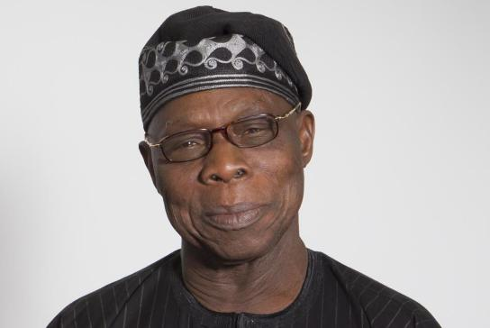

My Treatise For Future Of Democracy And Development In Nigeria
Let me start by welcoming and commending the emergence of a renewed and reinvigorated African Democratic Congress, ADC, as a political party. Since the inception of Coalition for Nigeria Movement, CNM, many of the sixty-eight registered political parties had contacted and consulted with the Movement on coming together and working together. The leadership of the Movement, after detailed examination, wide consultation and bearing in mind the orientation, policies and direction of the Movement, have agreed to adopt ADC as its platform to work with others for bringing about desirable change in the Nigeria polity and governance. I congratulate the leadership of the Movement for their decision and their choice. The emergence of ADC is the beginning of hard work to continue to consolidate our democracy and to make development in all its ramifications real, relevant, accessible, popular and reaching out to all Nigerians wherever they may be.
Let me particularly thank and congratulate millions of Nigerians who harkened to my clarion call in my statement of January 23, 2018 that our anger against misgovernance, poor performance, condonation of misconduct, incompetence, destabilising nepotism, cluelessness, denial and scapegoatism, lack of understanding of dynamics of internal politics which have led to greater disunity, inequity, injustice, senseless killings and destruction, must not be like the anger of the cripple but a positive anger coordinated and directed to put an end to the era of impotence and for Nigerians to join hands to seek effective solution through coalition, cooperation and togetherness that will take Nigeria to where God has created it to be. You registered in millions for the Coalition of Nigeria Movement, CNM. Your actions, enthusiasm and commitment, with those of others and other organisations – political parties, civil societies, social and cultural organisations – have made possible the new dawn that the ADC will usher in. With the emergence of ADC as a political party for the Movement and its associates and in line with my clear position which I have often repeated, the first phase of my job is done and I will not be a member of the Party but as I have always done since I quit partisan politics in 2014, I will keep alive and active on Nigerian and African issues and interests and I will be open to offering advice to any individual or organisation for the unity, development and progress of Nigeria and indeed of Africa. I will, of course, continue to exercise my right to freedom of speech where and when I consider necessary in the interest of Nigeria, Africa and humanity. The second phase will involve galvanisation of all like-minded forces for enthronement of new order in Nigeria.
In recommending the CNM to join the ADC, let me give you some points that are of interest. From the beginning, CNM is not a political party but a popular grassroots movement to stimulate the interest and participation of youth and women in particular in bringing about change in democratic dispensation, governance and development in Nigeria in such a way that power addicts will be forced to yield places for new entrants and participants in the power equation in the country. They will sanitise the system. With the ADC, embracing the policy of 30% youth of under 40 and 30% women in all organs of the Party, a significant paradigm shift has been brought about in the power equation. The ADC is a reformed and reinvigorated party, it will embrace all the features and policies which make CNM attractive and a source of hope and inspiration to millions at home and abroad. The ADC welcomes associates, other parties, groups and civil society organisations such as cultural, township unions and social organisations and interests. No former political party, movement, social or cultural organisation should claim the sole ownership of the renewed ADC. In name, it is relatively old but in establishment, organisation, membership, policies, programmes, orientation and focus, it is new. If this is not understood, accepted by all and made the foundation and pillar of the political party, it will be starting on a very shaky foundation and it will soon fall. I will advise others to join this political party platform to usher in a new dawn for Nigeria, but I may not be able to advise anybody to join PDP or APC no matter what window-dressing reformation they may claim. Although PDP would seem to have realised its mistakes of its immediate past of the last eight years or so, its present evolution would, by itself, not give confidence to well-meaning Nigerians who are interested in a new Nigeria in the hands of God that will have leadership, governance, development and values within our culture as its guiding principles with the attributes of honesty, integrity, patriotism, love, unity, industry, incorruptibility, good neighbourliness, faithfulness, trust, courage and love and fear of God held aloft. PDP offered apology without disciplining those who set Nigeria on a course of ruin and some of them are still holding leadership roles in their party. Nigerians may forgive, but Nigerians should never forget; otherwise they will be suffering from amnesia and the same ugliness may raise its head again. APC, as a political party, is still gloating and revelling in its unrepentant misgovernance of Nigeria and taking Nigerians for fools. There is neither remorse nor appreciation of what they are doing wrong. It is all arrant arrogance and insult upon injury for Nigerians. Whatever the leadership may personally claim, most Nigerians know that they, Nigerians, are poorer today than when APC came in and Nigeria is more impoverished with our foreign loan jumping from $3.6 billion to over $18 billion to be paid by the present and future generations of Nigerians. The country is more divided than ever before because the leadership is playing the ethnic and religious game which is very unfortunate. And the country is more insecure and unsafe for everybody. It is a political party with two classes of membership.
Before I leave this point, it is pertinent to make the point that PDP and APC are not actually made of men and women who are totally evil. There are sprinkles of good men and women out there and among them. But as political parties and the government they led or they are leading in the last eleven years, they have failed and failure should neither be hoisted for embracement nor reinforced. What must be done is to take what is best from all to come together on a new alliance platform that will take us to the promised land. There must be basic and fundamental ground for change and for people to change. What is not desirable is to take the leprous hand of either PDP or APC as the instrument to clean Nigeria up. The clean fingers in either of them can and must be grafted to the clean hands of new entrants and participants to move up and move on and that is what I understand the reinvigorated party platform is all about – change, new order and progress.
The party, ADC, as I understand it, is neither based on the immediate past, condemnable records of PDP as a ruling party in Nigeria nor on the present disastrous and distabilising performance of APC. It is a new platform and a new page in our political history. Some of us must hold ourselves as watchmen and watchwomen for the nation without necessarily belonging to any political party as genuinely concerned and interested citizens and statesmen and stateswomen beyond the ambition of office and enticement of grandeur of position or fortune.
Nigerians must keep their eyes wide open, their ears quite attentive, their minds very clear, their hands very clean and must not remain dumb in the face of atrocities and impunities of the governors against the governed. Those who govern us at all levels must be made to realise that it is our collective rights and sovereignty that they hold in trust for us and to be used for the good of all of us and with all of us having interest and having a stake in how we are governed. It is our God-given right and we must not allow the abuse of it. In the past, we have laid back and we have been taken for a ride. How did we allow Nigeria to be run by K34 without a murmur? Of course, that was followed by the running of Nigeria by Ijaw nation with four women and now by kith and kin and we are still jubilant in the face of atrocities, insecurity, disasters and degradation politically, economically and socially. When I was in school, tolerating what we have tolerated in the past twelve years with our tails within our legs like frightened dogs, we would be asking if we are collectively mesmerised and we needed to go to ‘aro’ for mental or psychological examination.
Some have asked cynically and skeptically if there would ever be change. I can understand their cynicism and skepticism. If we are doing the same thing and we expect a different result, we would be fooling ourselves. As I said earlier, I believe that what we are having is new with some paradigm shift in power equation involving youth and women. The grassroots involvement which CNM has advocated must be maintained consistently. Inclusiveness must take care of over 25 million Nigerians living with disability so that they can make meaningful contribution to societal discourse and development. They must be made part of popular participation. Elitism must be drastically reduced. All the political parties that have emerged since the present dispensation in 1999 have been too elitist, and have gradually lost internal democracy, leaving room for corruption and dictatorship. The greatest lacuna in political party administration in Nigeria since the present dispensation is the ownership of the political party through regular contribution of the members of the party for the upkeep of the party. Worse still is what PDP has now accepted as part of its failure and disappointment of the nation which is looting government treasury to finance individual and party elections. Unfortunately, APC has followed suit. To curb corruption, primary elections should cease to be by delegates but by all card-carrying and financial members of the party within their constituencies. This will save lives as many people have died by being shepherded to a central location as delegates to vote at primaries. It also introduced corruption into the system. At one of the PDP primaries within the last eight years, one candidate distributed $10,000 per delegate, the one who distributed $15,000 per delegate won the primary. It was not necessarily on merit but certainly, dollar talked. Concluding my point on corruption in politics particularly at the primary elections level, there must be strict control of campaign funding and transparent accounting by the Independent National Electoral Commission, INEC, of all funds contributed and all funds utilised by individuals and political parties for campaigns. I was shocked when an insider in the PDP told me that the amount of money the party used for 2015 elections would be in the neighbourhood of $3 billion. It was all directly or indirectly from the government treasury.
The change we expect to be forthcoming, realistic and effective, will have to come from all of us – citizens, political parties, executive, legislature, judiciary and electoral organisations. We must stop the blame game and must all realise that Nigeria will be as good as we all make it to be – a good, effective, efficient, performing, equitable, fair, just, peaceful, secure, prosperous, united, wholesome and God-fearing country. I stand on the platform that change is possible and human beings are agents of change and we have seen that in our country both for good and for ill. I remain positive and optimistic. If we believe we can, we will. Political parties must do their own with a country-centered and value-laden philosophy, orientation and service. We should have one INEC for all elections at local government, State and national levels. We have all seen the ridiculous phenomena of local government elections conducted by States’ so-called INEC being always almost completely won by the ruling party in the State. We all know it is a sham. The National Assembly must rid itself of corruption; and it can do it. It must also make its remuneration relevant to Nigerian economic and social reality. It can also do it. Then it must make laws and amend the Constitution to have one INEC for all elections in the country, strict and scrupulous funding and accounting of all electoral campaigns and all elections. The INEC must be given power to supervise, control and regulate campaign funds and funds and contribution to political parties. The National Assembly must amend the Constitution to allow Nigerians in diaspora with current Nigerian passports to vote in all Nigerian elections at Nigerian Embassies abroad. The National Assembly should also legislate 30% youth of under 40 and 30% women into all organs of political parties and into all institutions of governments. It should be a great step forward.
The Executive which emerges on the platform of one political party must avoid ‘winners take all’ especially in utilising the best brains available in running the affairs of the country. While the government of the day must be run essentially by the political party that wins the election, there must be consultation and cooperation especially on national issues of unity, economy, security and foreign affairs. There must also be minimum acceptable national position on these issues and which will also allow members of other parties that are good enough to be utilised by the government without necessarily running a government of so-called national unity. Rather, all governments should be government of national common interest.
If we get the platform right, we will get the system right particularly in running the government which should be participatory and all-encompassing, not exclusive, discriminatory but talent-hungry and talent-targeting for the good of the country. Governance must not be myopic, restrictive and limited to circle of tribe, friends and blood relations but open-armed, transparent, open-minded, accommodating and seeking for the best wherever the best can be found to achieve the best for the country. We must all be guided and inspired by Nigerian Dream which must be inclusive, elevating and giving hope, great future and conquering spirit to all Nigerians.
In all situations, let us stand for good leadership, good governance, all-round development and enduring and authentic values within our culture. If we get it all right, our demography will be an asset and not a liability nor indeed a disaster. What is more, our democracy will move from strength to strength dynamically, inclusively, workingly, prosperously, equitably, communally and satisfactorily for all, by all and with all. When democracy goes symbiotically with development as they should, a happy, wholesome, united and inclusive society emerges which is secure, formidable, prosperous and respected within the comity of nations. That is God’s plan for Nigeria which Nigerians must make manifest. There is only one reason for where we are now, it is leadership failure.
My points are borne out of my experience, learning, knowledge and interaction with others. Let us use these ideas as the basis for discussing and debating the course for advancing democracy and development on a sustainable trajectory for Nigeria founded on good leadership and good governance with welfare, well-being and progress of all.
Once again, I congratulate all members of Coalition for Nigeria Movement, all the political parties and civil society organisations that have adopted ADC as a political party platform to move Nigeria up and forward and I wish them success for now and the future. The eyes of the nation and the world are on you to show that with people and organisation of like mind, a real difference is possible and you will make it. I wish you well. But always remember that Nigeria belongs to you as it belongs to those in power. If you fail to use the potent weapon democracy offers you and that is your vote, then you have yourselves to blame. You can move on to the next stage in the democratic advance for change, unity, security, stability, good governance, prosperity and progress. So may it be for Nigeria.
President Olusegun Obasanjo May 10, 2018